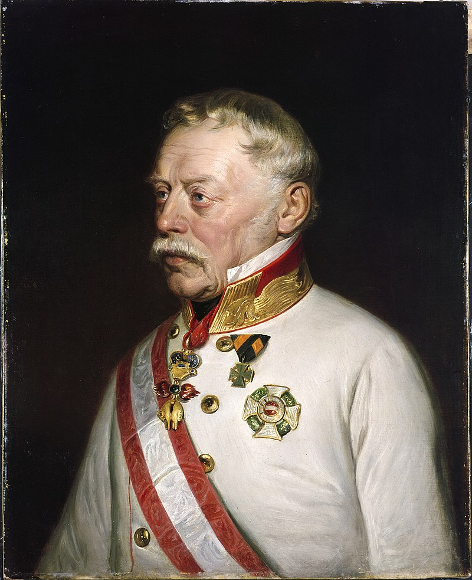
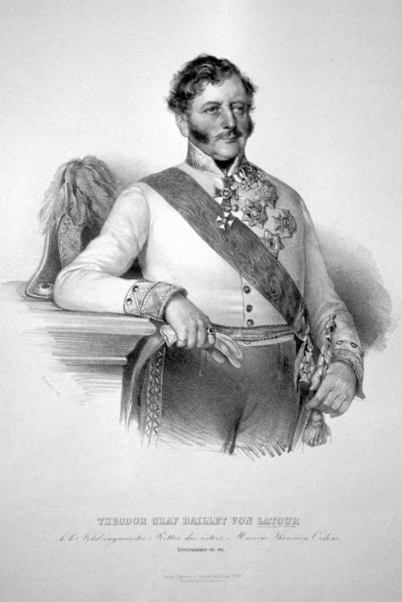
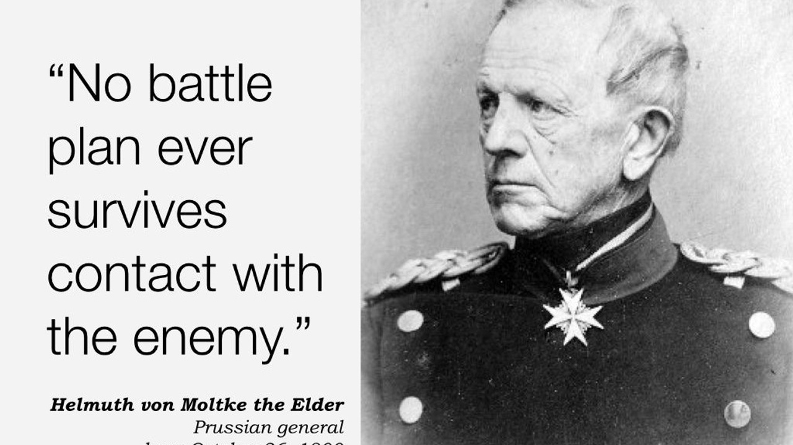

휴전 (15) - 두 개의 작전안
게시: 2023-10-09T06:30:43+09:00
베르나도트가 연합군의 제장들을 모아놓고 밝힌 기본 작전안을 요약하면 다음과 같았습니다. 1) 연합군은 보헤미아군, 슐레지엔군, 북방군의 3개군으로 구성하며, 이들은 나폴레옹이 전군을 이끌고 어느 한 방면군을 공격하지 못하도록 협동작전을 펼친다. 2) 이를 위해 3개군은 서로를 지원할 수 있는 거리 내에서 작전을 펼치도록 근접한 위치에 있어야 한다. 3) 만약 나폴레옹이 어느 한 방면군을 공격한다면, 그 목표가 된 방면군은 반드시 후퇴하고 다른 두 방면군은 나폴레옹의 후방과 측면을 공격한다. 4) 3개군은 모두 결전을 피하고 적 부대의 소모를 노린다. 단, 만약 적이 분산되어 있을 경우 과감하게 공격해야 한다. 아마 나폴레옹이 이 작전안을 보았다면 식은 땀을 흘렸을 것입니다. 나폴레옹은 언제나 결전을 추구하는 지휘관이었고, 가장 골치 아픈 적은 하나로 단단히 뭉쳐있는 적이 아니라 나폴레옹이 지치기를 기다리며 끊임없이 후퇴하는 적이었습니다. 이런 작전을 구사하는 적군을 상대해야 한다면 나폴레옹은 겁이 나지는 않더라도 한숨이 절로 나왔을 것입니다. 그러나 이 작전안은 프로이센 및 러시아 장군들을 크게 실망시켰습니다. 누가 봐도 나폴레옹과의 정면 대결을 회피하고 대신 그의 발뒤꿈치를 노린다는 치졸한 것이었기 때문이었습니다. 사람들은 베르나도트가 나폴레옹 밑에서 10년 넘게 복무했으므로 나폴레옹 스타일의 화려한 기동전으로 적의 주력 부대 격멸을 노리는 작전을 추구할 것이라고 기대했는데, 이건 좋게 말해서 적의 약점을 노리는 신중한 작전이지만 나쁘게 말하면 나폴레옹과의 정면 대결을 극도로 피하는 겁장이가 짤 만한 작전이었습니다. 생각해보면 언제나 결전을 꾀하던 러시아-프로이센 연합군의 작전은 이미 뤼첸-바우첸 전투에서 나폴레옹에게 압도당한 바 있었으니 똑같은 작전을 똑같은 적에게 구사하는 것은 똑같은 결과를 낳을 뿐이었습니다. 다만, 이번에는 달라지는 점이 있었습니다. 스웨덴군 3만, 그리고 오스트리아군 12만의 참전으로 연합군이 병력면에서 더 우세해졌다는 것이었습니다. 실은 베르나도트가 주장한 것도 나폴레옹군의 소모를 노리되 결코 수비만 하자는 것은 아니었습니다. 그는 분명히 나폴레옹군 중에서 분산된 부대는 공격하자고 했고, 나폴레옹 주력부대에 대해서도 그 측면과 후면은 꼭 공격하자고 했습니다. 배르나도트가 말한 것의 핵심은 나폴레옹의 주력군과 정면 대결은 피한다는 것이었고, 그건 나폴레옹에게 많은 골칫거리를 안겨주는 좋은 작전안이었습니다. 그러니까 1813년 하계 작전에 대해, 흔히 연합군이 나폴레옹은 도저히 패배시킬 수 없는 전장의 신이니 그는 무조건 피하고 대신 그의 부하들만 공격하는 전법을 썼다고 이야기들 하지만, 그건 사실이 아니었습니다. 적의 주력 부대는 피하고 분산고립된 작은 부대는 공격하는 것은 병법의 기본이었습니다. 하긴 프랑스군의 주력부대에는 나폴레옹이 있는 것이 당연했으니 베르나도트가 나폴레옹을 전장에서 만나는 것을 극도로 무서워 했다는 소문이 날 만도 했습니다. 그럼에도 불구하고 러시아-프로이센 연합군의 장군들은 좀더 공격적인 작전을 원했고, 스웨덴측과의 실무 협의 끝에 작전안을 살짝 바꿨습니다. 요점은 3개 방면군 중 가장 큰 방면군은 적의 주력부대를 막아서고, 나머지 2개 방면군은 그 측면과 후면을 공격한다는 것이었습니다. 이 기본 작전안은 이 회담이 열린 도시의 이름을 따서 트라헨베르크 의정서(Trachenberg Protocol)라고 불렸습니다. 이렇게 처음에는 다들 이게 뭐냐고 뒤에서 조소를 날렸지만, 훗날 연합군의 승리를 이끌어낸 이 트라헨베르크 의정서에 대해 프로이센의 크네제벡과 러시아의 톨 등이 모두 자기가 이 의정서의 사실상 가장 많은 영향을 끼쳤다고 주장하기도 했습니다. 그러나 대부분의 사람들은 그 의정서의 설계자는 베르나도트라고 생각했습니다. 이 의정서 기본 계획에 따르면 즉각 러시아-프로이센 연합군 중 10만 정도가 보헤미아로 이동하여 그 일대에 전개될 약 12만의 오스트리아군과 합류하게 되어있었습니다. 이 21~22만의 병력을 갖출 보헤미아 방면군이 제6차 대불동맹군의 주력부대였고 바로 나폴레옹의 본진 정면을 막아서야 할 막중한 책임을 진 방면군이었습니다. 슐레지엔 방면군은 러시아-프로이센 연합군이 보헤미아로 떠날 때 남겨둘 약 5만의 러시아-프로이센 혼성군으로 구성될 것이었고,북방군은 약 11만의 스웨덴-프로이센-러시아군으로 구성될 예정이었습니다. 결국 제6차 대불동맹전쟁은 이 38만 정도의 병력으로 치러지는 것이었습니다. 이 트라헨베르크 의정서가 의미를 가지려면 오스트리아측의 동의가 있어야 했습니다. 특히 이 의정서에 따르면 오스트리아 장군이 지휘하는 보헤미아군이 나폴레옹의 정면을 상대해야 했으므로 더욱 그랬습니다. 그리고 오스트리아군은 자기 나름대로의 작전안을 가지고 있었습니다. 오스트리아군의 작전안을 책임진 사람은 바로 라데츠키(Joseph Radetzky von Radetz)였습니다. 라데츠키는 트라헨베르크에서 러시아-프로이센-스웨덴의 군주들이 만나기 직전인 7월 7일, 상관인 슈바르첸베르크에게 오스트리아군이 어떻게 연합군과 협동 작전을 펼칠 것인지 작전안을 마련한 바 있었습니다. 그 작전안을 요약하면, 나폴레옹은 반드시 보헤미아로 선제 공격을 해올 것인데 오스트리아군만으로는 그를 막을 수 없으니 연합군이 약 수 만의 증원군을 보헤미아의 오스트리아군에게 보내주어야 한다는 것이었습니다. 그렇게 오스트리아군이 나폴레옹의 거센 공격을 보헤미아에서 막아내는 동안 나머지 연합군이 나폴레옹의 뒤를 친다는 것이 기본 공식이었습니다.

(라데츠키입니다. 나폴레옹보다 3살 연상이었던 그는 요한 스트라우스가 작곡한 라데츠키 행진곡의 주인공이기도 합니다. 체코 귀족 가문 출신이었던 그는 어려서 아버지와 어머니를 차례로 잃고 할아버지 밑에서 크다 빈의 테레지아 아카데미(Theresianische Akademie)에서 교육을 받고 20세에 소위로 임관합니다. 그는 일찍부터 프랑스 혁명 전쟁에 투입되어 1792년부터 오스트리아령 네덜란드에서 싸웠고, 1796년부터는 이탈리아 원정 중이던 나폴레옹과의 싸움에도 투입되었습니다. 그래서 볼리유(Beaulieu) 장군 밑에서 민치오(Mincio) 전투를, 뷔름저(Wurmser) 장군 밑에서 만토바 포위전 등을 치렀습니다. 마렝고 전투에도 대령 계급으로 참전하여 총알을 5발이나 맞기도 했고, 1809년의 에크뮐 전투와 바그람 전투에도 사단장으로 참전했습니다. 그는 1812년까지 오스트리아군 총사령부에서 참모로 일하며 오스트리아군의 개혁을 이끌었으나, 재무부의 반대로 군 개혁이 제대로 되지 않자 사임하고 낙향을 했다가 1813년 나폴레옹의 패퇴 소식에 복귀한 상황이었습니다.) 어떻게 보면 트라헨베르크 의정서의 내용과 크게 다른 바가 없었습니다. 그러나 실은 상당한 차이가 있었습니다. 트라헨베르크 의정서의 기본 방향은 공격이었습니다. 특히 보헤미아군이 나폴레옹의 정면을 공격해주는 것이 핵심이었습니다. 그러나 라데츠키의 이 작전안의 핵심은 나폴레옹의 공격으로부터 보헤미아를 막아내는 것에 있었고, 지극히 수비적인 것이었는데다, 무엇보다 주도권을 나폴레옹에게 완전히 내주는 결과를 낼 수 밖에 없었습니다. 트라헨베르크 의정서에 따르면 보헤미아 방면군은 즉각 보헤미아에서 출정하여 나폴레옹의 주력군을 찾아 전진해야 했지만, 라데츠키의 작전안에 따르면 보헤미아 방면군은 나폴레옹이 보헤미아로 쳐들어오는 것을 기다려야 했습니다. 즉, 라데츠키의 작전안은 베르나도트의 작전안보다 오히려 더 소극적인 것이었습니다. 라데츠키의 작전안이 프란츠 1세의 검토를 받은 뒤 4일 후인 7월 16일, 연합국이 보낸 트라헨베르크 의정서가 오스트리아군 사령부에 도착했습니다. 라데츠키는 이 의정서를 보고도 자신의 작전안을 그대로 밀어붙였습니다. 슈바르첸베르크 및 프란츠 1세의 승인까지 받은 작전안은 7월 22일 바이예 드 라투르(Theodor Franz von Baillet de Latour) 대령의 손에 들려 라이헨바흐(Reichenbach)의 연합군 사령부에 전달되었습니다.

(바이예 드 라투르 대령입니다. 외국인 이름을 적을 때 가장 헷가리는 부분이 이렇게 독일어권에서 프랑스식 이름을 가진 사람이나 반대로 프랑스에서 독일식 이름을 가진 사람의 이름을 뭐라고 적어야 하는가 하는 것입니다. 여기서는 그냥 프랑스식 이름으로 표기했습니다. 오스트리아의 린츠(Linz)에서 태어난 이 양반이 저렇게 프랑스식 이름을 가진 것은 이 양반이 현재의 벨기에 지역 출신으로서 오스트리아 귀족이 된 가문이기 때문입니다. 나폴레옹보다 11살 연하인 그는 백작 가문의 아들임에도 드물게 공학을 공부하고 공병 장교로 임관했습니다. 나폴레옹 전쟁에도 당연히 참전하여 많은 훈장을 받았지만 공병의 특성상 우리가 알 만한 공적을 세우지는 못했습니다. 이 분은 유럽 전체 혁명의 해이던 1848년에 국방부 장관이었는데, 헝가리 혁명 진압을 위해 부대가 파견되자 오스트리아 수도 빈에서도 그를 막으려는 폭동이 발생했고, 그 와중에 폭도들에게 린치를 당해 피살되었습니다.) 라데츠키의 작전안을 받아보고 바이예 드 라투르 대령과 이야기를 나눠 본 연합군 수뇌부는 다소 당황했습니다. 오스트리아군의 전투 의지가 매우 소극적이라는 것을 확인했기 때문이었습니다. 심지어 바이예 드 라투르 대령은 약 10만의 연합군이 보헤미아로 투입된다는 소식에 대해서도 기쁨이나 감사보다는 곤란하다는 입장을 전달했습니다. 이미 오스트리아 야전군 전체가 포진한 보헤미아 현지 사정상, 추가로 받아들일 수 있는 병력은 7만 정도가 한계이며 그 이상의 병력을 투입할 경우 식량 공급이 어렵다는 것이었습니다. 하지만 이런 태도에도 불구하고, 이번에도 러시아와 프로이센 수뇌부들은 결국 입장을 크게 양보하여 라데츠키의 작전안을 받아들이기로 했습니다. 러시아-프로이센 사령부가 있던 마을의 이름을 따서 라이헨바흐 작전안이라고 불리게 되는 라데츠키의 작전안을 러시아-프로이센 연합군이 받아들인 이유는 간단했습니다. 이번 하계 작전의 성공 여부는 어떤 작전을 펼치느냐 보다는 오스트리아가 참전하느냐 마느냐에 달려 있었기 때문이었습니다. 게다가 가만히 보면 트라헨베르크 의정서나 라이헨바흐 작전안이나 결과적인 모양새는 비슷했습니다. 그 그림은 보헤미아군이 나폴레옹의 멱살을 잡고 있는 동안 북방군과 슐레지엔군이 나폴레옹의 뒤를 친다는 것이었습니다. 그리고 러시아-프로이센 연합군은 일단 전쟁이 시작되면 모든 작전안은 헝클어지게 되어 있었으므로, 오스트리아군을 꼬드겨 나폴레옹을 먼저 공격하게 하는 것도 충분히 가능한 일이라고 생각했습니다. 어차피 라데츠키의 작전안에도 '만약 나폴레옹이 엘베 강 일대에서 수세로 나온다면 보헤미아군이 공세로 나간다'라는 구절이 있었기 때문이었습니다.

('모든 작전계획은 적과의 첫번째 조우때 깨지기 마련이다'라는 말을 저는 Call of Duty라는 컴퓨터 게임에서 보았습니다만, 알고보니 이렇게 비스마르크와 함께 독일제국을 세운 몰트케 원수의 말이었군요.) 이렇게 연합군의 1813년 하계 작전은 오스트리아가 지휘하는 보헤미아 방면군을 믿고 벌어지게 되었습니다. 그러나 역시, 실제 전투가 벌어지자마자 상황은 연합군 수뇌부가 생각했던 것과는 전혀 딴판으로 흘러갔습니다. Source : The Life of Napoleon Bonaparte, by William Milligan Sloane Napoleon and the Struggle for Germany, by Leggiere, Michael V https://en.wikipedia.org/wiki/Joseph_Radetzky_von_Radetz https://en.wikipedia.org/wiki/Theodor_Franz,_Count_Baillet_von_Latour https://www.martinsharp.com/blog/no-battle-plan-survives-first-contact-with-the-enemy